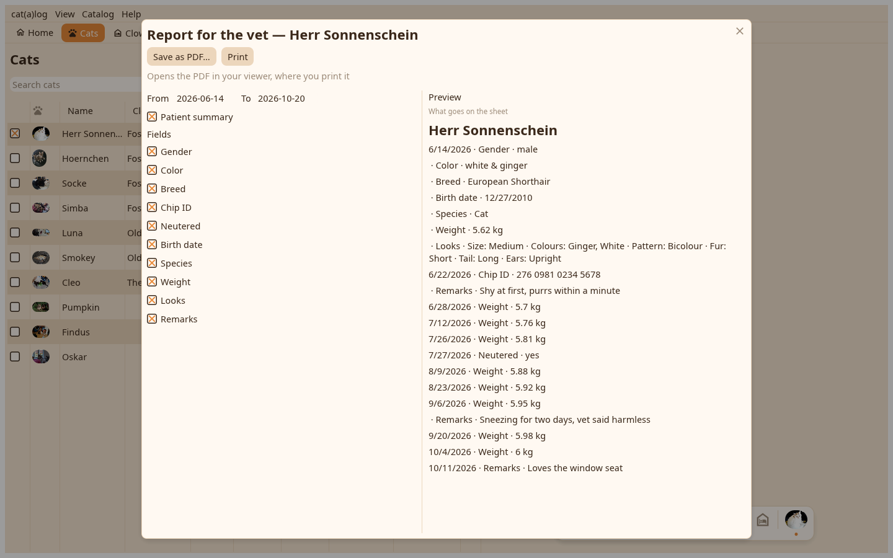
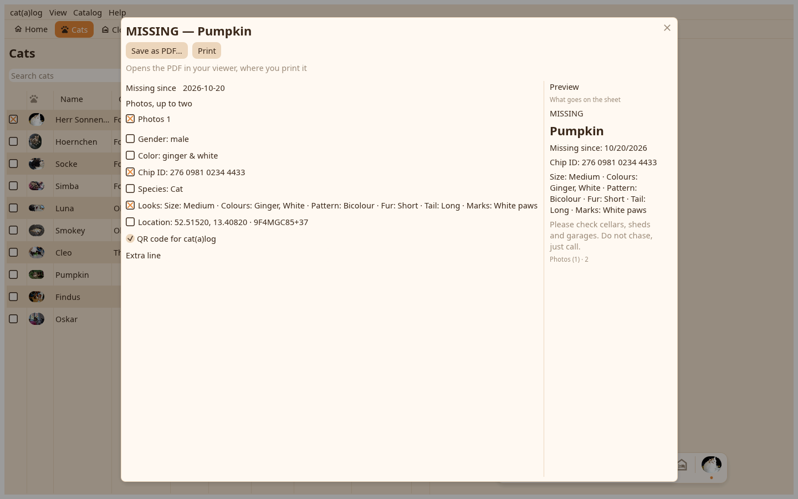

1. The card
Tick the values that go on it; the preview follows. Save PDF, Save image, Copy as image or Print.

2. The report
The vet report: the date range, the patient summary, the rows, a curve per number.

3. The poster
The missing poster for a missing cat: the ticks, the photos, the code; printed black on white.
